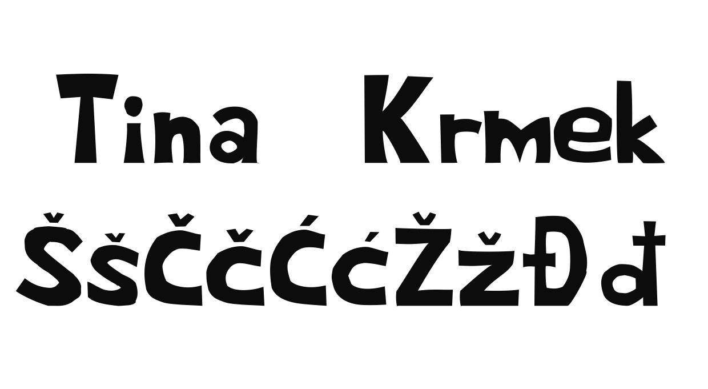
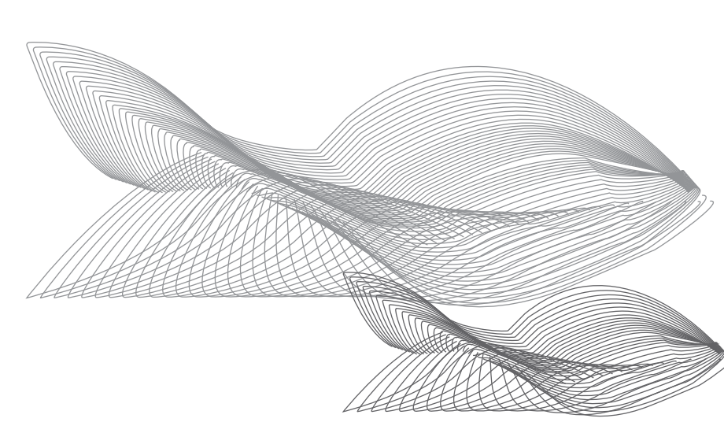
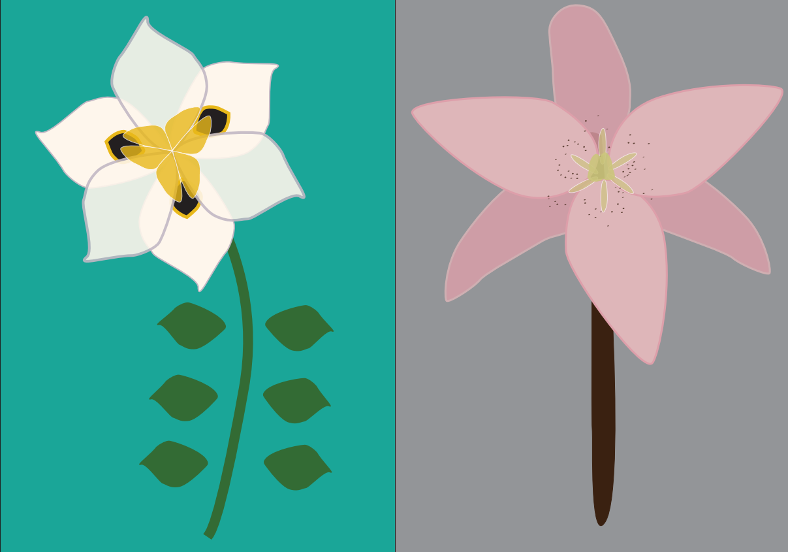
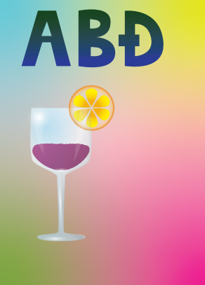

1. vježba-font
Pravljenje fota u programu FontForge.
2. vježba-Bezierova krivulja, precizno crtanje
Crtanje Bezierovih krivulja u kooridnatnom sustavu.Vježbu sam radila u Illustratoru.
3. vježba-boja, transformacija

Imali smo zadan cvijet kojeg smo morali "kopirati" u Illustratoru.
4. vježba-gradijent, transparencija
U vježbi se obrađuje tema izrade složenih objekata koji se sastoje od više staza metodama spajanja (Unite/Compound path) ili oduzimanja oblika (Difference/Subtract). Apliciranje različitih vrsta gradijenata (linearni, radijalni, mesh...) od dvije ili više boja. Transparencija i poredak slojeva u izradi složene grafike.